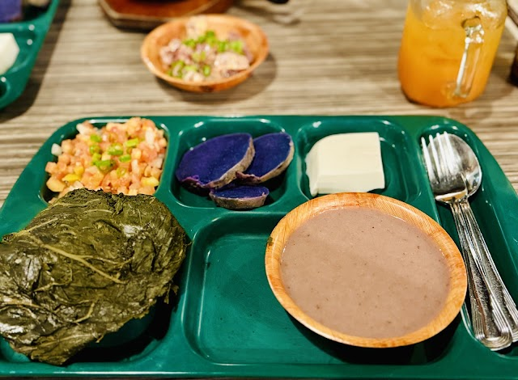
| 営業時間 | 月・火・水・木 9:30〜20:00 ／ 金・土 9:30〜20:30 ／ 日 9:30〜15:00 |
|---|---|
| 定休日 | なし(要最終確認) |
| 住所 | 680 Ala Moana Blvd #105, Honolulu, HI 96813 |
| 予約 | 可 — ☎ (808) 954-4955 ／ 公式サイト ／ 予約サイト |
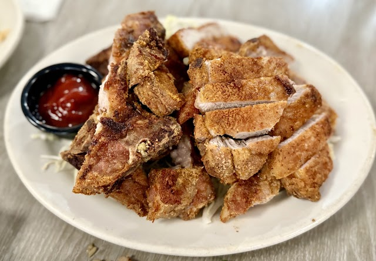
| 営業時間 | 月・火・水・木・金 16:00〜20:30 ／ 土・日 12:00〜20:30 |
|---|---|
| 定休日 | なし(要最終確認) |
| 住所 | 1225 Hopaka St, Honolulu, HI 96814 |
| 予約 | 可 — ☎ (808) 591-0253 ／ 公式サイト ／ 予約サイト |
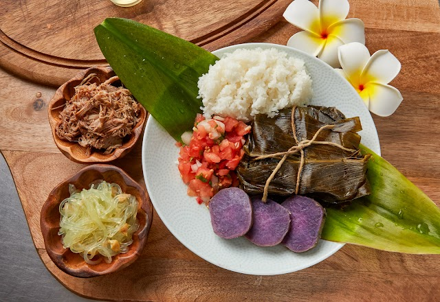
| 営業時間 | 火・水・木・日 9:00〜17:00 ／ 金・土 9:00〜19:00 |
|---|---|
| 定休日 | 月曜 |
| 住所 | 2332 Young St, Honolulu, HI 96826 |
| 予約 | 不要 — ☎ (808) 941-9994 ／ 公式サイト |
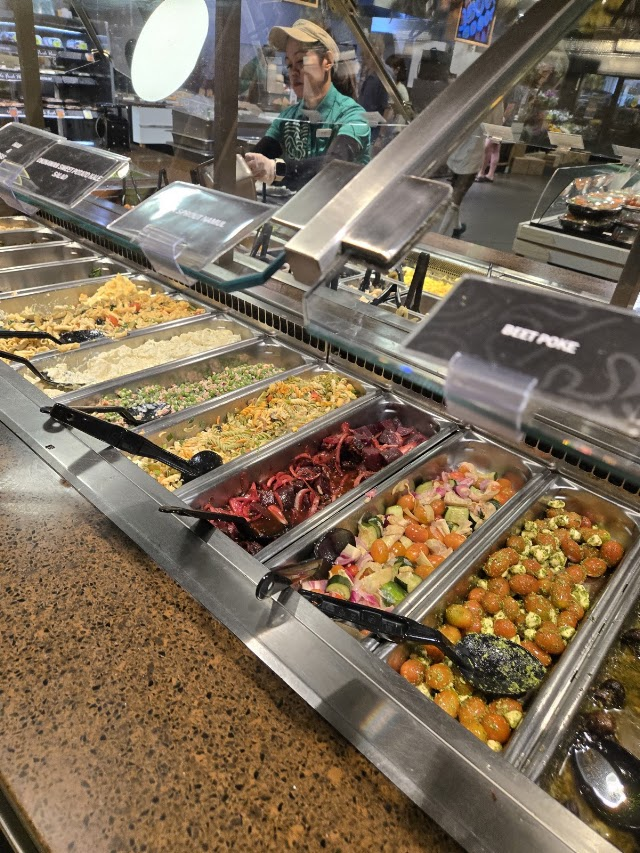
| 営業時間 | 月・火・水・木・金・土・日 6:00〜22:00 |
|---|---|
| 定休日 | なし(要最終確認) |
| 住所 | 1450 Ala Moana Blvd, Honolulu, HI 96814 |
| 予約 | 不要 — ☎ (808) 949-5044 ／ 公式サイト |
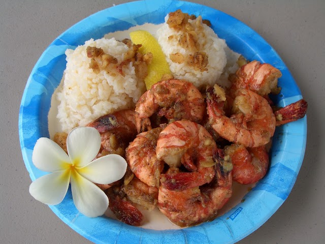
| 営業時間 | 月・火・水・木・日 11:00〜20:00 ／ 金・土 11:00〜21:00 |
|---|---|
| 定休日 | なし(要最終確認) |
| 住所 | 458 Keawe St Fl 2, Honolulu, HI 96813 |
| 予約 | 不要 — ☎ (808) 201-3980 ／ 公式サイト |
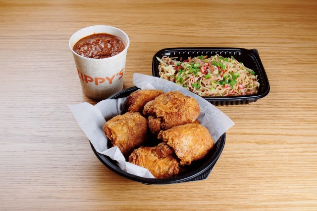
| 営業時間 | 月・火・水・木・日 6:00〜22:00 ／ 金・土 6:00〜0:00 |
|---|---|
| 定休日 | なし(要最終確認) |
| 住所 | 1725 S King St, Honolulu, HI 96826 |
| 予約 | 不要 — ☎ (808) 973-0877 ／ 公式サイト |
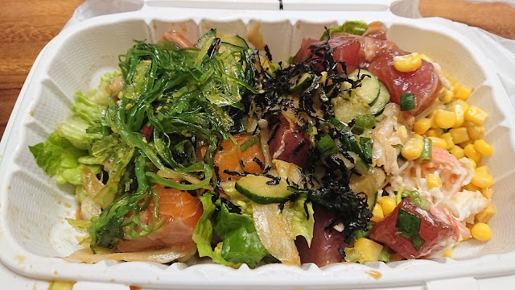
| 営業時間 | 月・火・水・木 11:00〜19:00 ／ 金・土 11:00〜19:30 ／ 日 11:00〜18:00 |
|---|---|
| 定休日 | なし(要最終確認) |
| 住所 | 1450 Ala Moana Blvd Ste 1081, Honolulu, HI 96814 |
| 予約 | 不要 — ☎ (808) 942-3962 ／ 公式サイト |
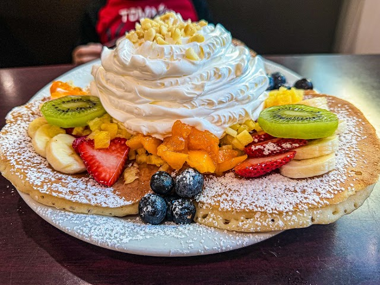
| 営業時間 | 月・火・水・木・金・土・日 7:00〜14:00 |
|---|---|
| 定休日 | なし(要最終確認) |
| 住所 | 451 Piikoi St, Honolulu, HI 96814 |
| 予約 | 不可 — ☎ (808) 538-3447 ／ 公式サイト |
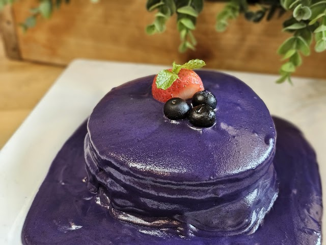
| 営業時間 | 月・火・水・木・金・土・日 7:00〜15:30 |
|---|---|
| 定休日 | なし(要最終確認) |
| 住所 | 745 Ke’eaumoku St #100, Honolulu, HI 96814 |
| 予約 | 可 — ☎ (808) 942-0505 ／ 公式サイト ／ 予約サイト |
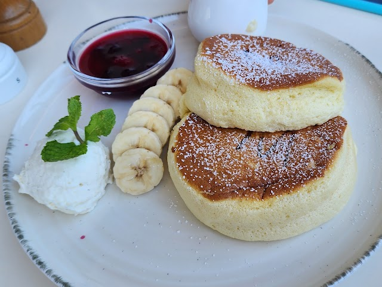
| 営業時間 | 月・火・水・木・金 7:30〜15:00, 17:00〜21:00 ／ 土・日 7:30〜15:00 |
|---|---|
| 定休日 | なし(要最終確認) |
| 住所 | 1000 Auahi St 1 #110, Honolulu, HI 96814 |
| 予約 | 要 — ☎ (808) 798-0372 ／ 公式サイト |
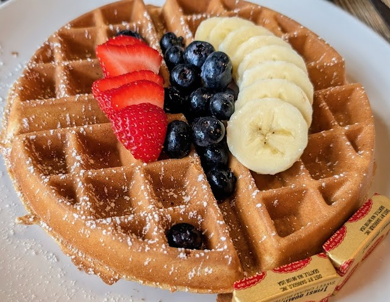
| 営業時間 | 月・火・水・木・金・土・日 7:00〜16:00 |
|---|---|
| 定休日 | なし(要最終確認) |
| 住所 | 685 Auahi St #113, Honolulu, HI 96813 |
| 予約 | 不要 — ☎ (808) 369-3444 ／ 公式サイト |
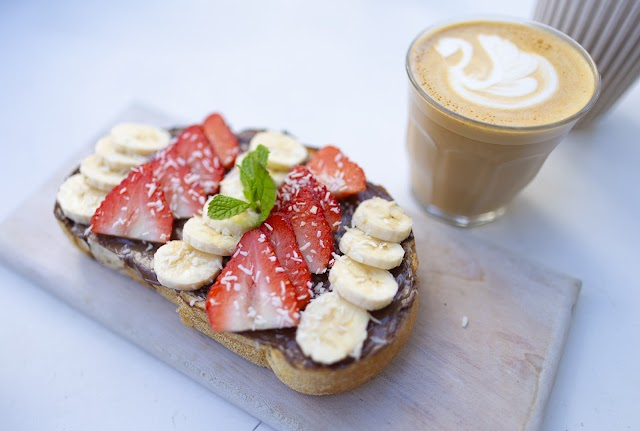
| 営業時間 | 月・火・水・木・金 7:00〜14:00 ／ 土・日 8:00〜14:00 |
|---|---|
| 定休日 | なし(要最終確認) |
| 住所 | 324 Coral St Ste 1A-104b, Honolulu, HI 96813 |
| 予約 | 不要 — ☎ (808) 312-3979 ／ 公式サイト |
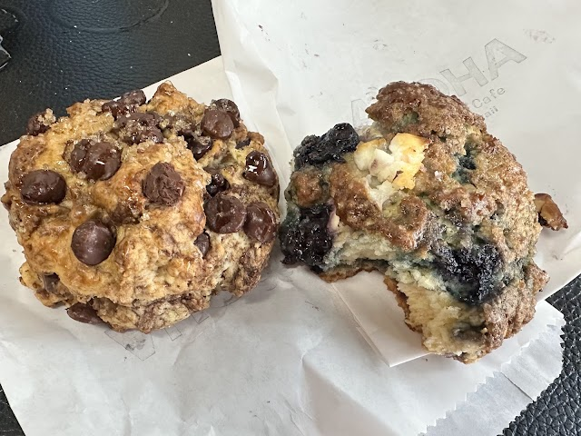
| 営業時間 | 月・火・水・木・金 7:00〜14:00 ／ 土 8:00〜14:00 |
|---|---|
| 定休日 | 日曜 |
| 住所 | 1001 Waimanu St, Honolulu, HI 96814 |
| 予約 | 不要 — ☎ (808) 600-7907 ／ 公式サイト |
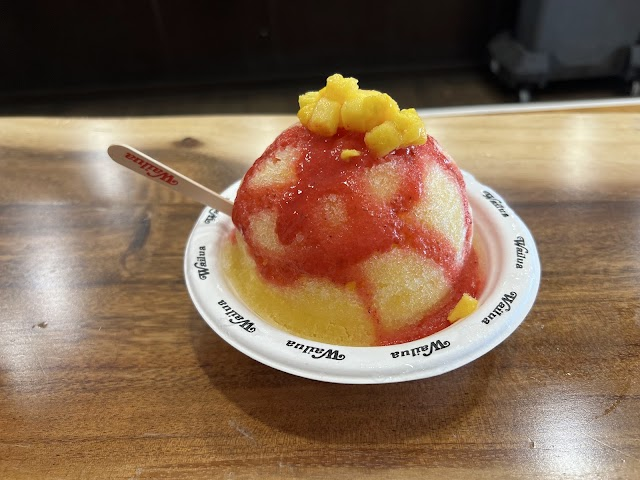
| 営業時間 | 月・火・水・木・金・土・日 11:00〜18:00 |
|---|---|
| 定休日 | なし(要最終確認) |
| 住所 | 2135 Waiola St, Honolulu, HI 96826 |
| 予約 | 不要 — ☎ (808) 949-2269 ／ 公式サイト |
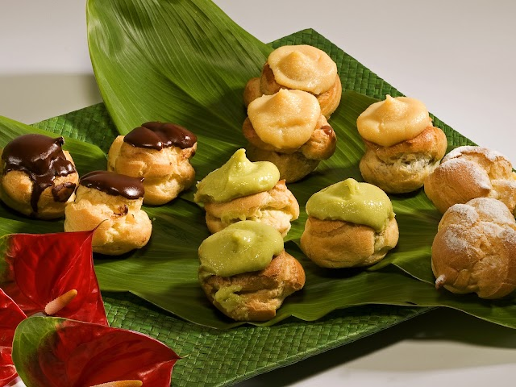
| 営業時間 | 月・火・水・木・日 7:00〜20:00 ／ 金・土 7:00〜21:00 |
|---|---|
| 定休日 | なし(要最終確認) |
| 住所 | Macy's 3rd Floor (Main Entrance via Mountain Side, Parking lot, 1450 Ala Moana Blvd APT 1300, Honolulu, HI 96814 |
| 予約 | 不要 — ☎ (808) 944-4088 ／ 公式サイト |
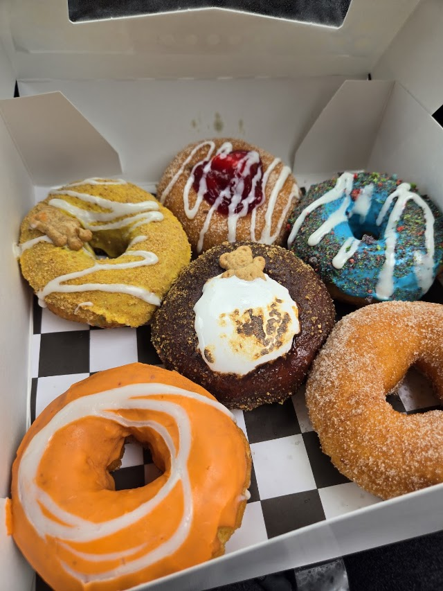
| 営業時間 | 月・火・水・木・金・土・日 6:00〜14:00 |
|---|---|
| 定休日 | なし(要最終確認) |
| 住所 | 1234 Kona St, Honolulu, HI 96814 |
| 予約 | 不要 — ☎ (808) 200-3978 ／ 公式サイト |
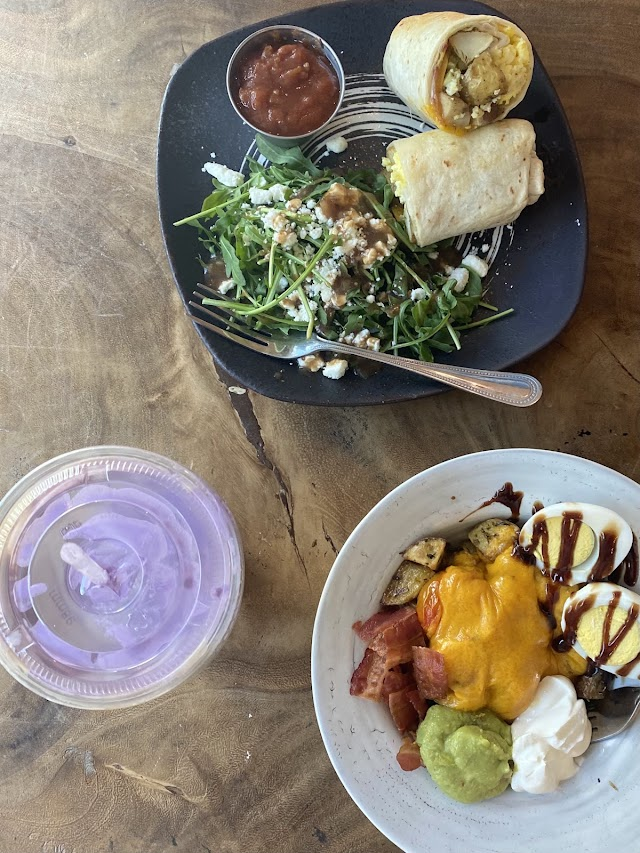
| 営業時間 | 月・火・水・木・金・土・日 7:30〜17:00 |
|---|---|
| 定休日 | なし(要最終確認) |
| 住所 | 600 Ala Moana Blvd, Honolulu, HI 96814 |
| 予約 | 不要 — ☎ (808) 536-2222 ／ 公式サイト |
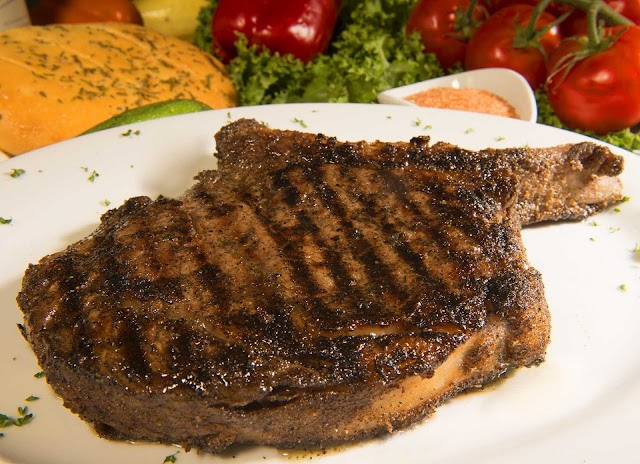
| 営業時間 | 月・火・水・木・金・土・日 16:30〜22:00 |
|---|---|
| 定休日 | なし(要最終確認) |
| 住所 | 410 Atkinson Dr Hotel, 36th Floor, Honolulu, HI 96814 |
| 予約 | 要 — ☎ (808) 949-3636 ／ 公式サイト ／ 予約サイト |
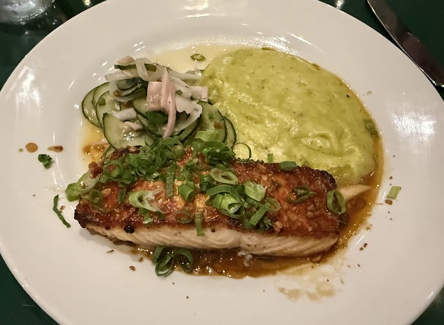
| 営業時間 | 月・火・水・木・金・土・日 11:00〜21:00 |
|---|---|
| 定休日 | なし(要最終確認) |
| 住所 | 1108 Auahi St #170, Honolulu, HI 96814 |
| 予約 | 推奨 — ☎ (808) 215-0022 ／ 公式サイト ／ 予約サイト |
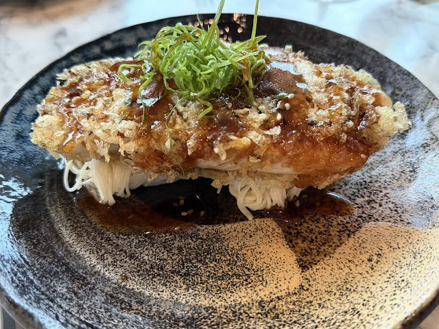
| 営業時間 | 火・水・木・金・土 17:00〜20:00 |
|---|---|
| 定休日 | 月・日曜 |
| 住所 | 888 Kapiolani Blvd, Commercial Unit, Suite 201, Honolulu, HI 96813 |
| 予約 | 推奨 — ☎ (808) 955-6505 ／ 公式サイト ／ 予約サイト |
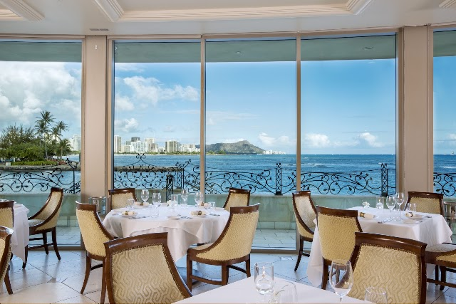
| 営業時間 | 水・木・金 17:00〜20:30 ／ 土・日 11:00〜14:00, 17:00〜20:30 |
|---|---|
| 定休日 | 月・火曜 |
| 住所 | 53 Ahui St, Honolulu, HI 96813 |
| 予約 | 推奨 — ☎ (808) 536-5353 ／ 公式サイト ／ 予約サイト |
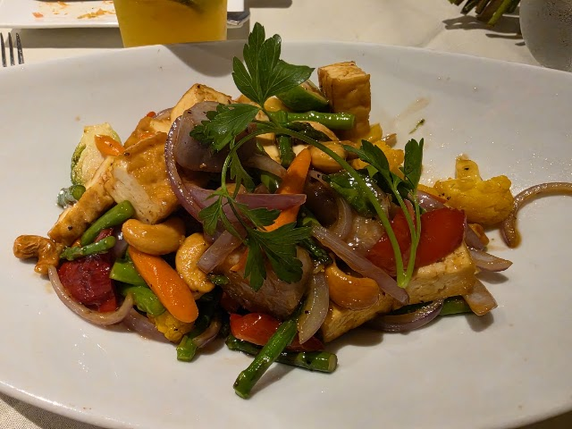
| 営業時間 | 水・木・金・土・日 16:00〜22:00 |
|---|---|
| 定休日 | 月・火曜 |
| 住所 | 1009 Kapiolani Blvd, Honolulu, HI 96814 |
| 予約 | 推奨 — ☎ (808) 585-0011 ／ 公式サイト ／ 予約サイト |
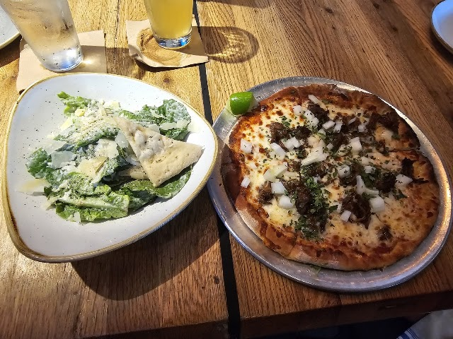
| 営業時間 | 月・火・水・日 11:00〜21:00 ／ 木・金・土 11:00〜22:00 |
|---|---|
| 定休日 | なし(要最終確認) |
| 住所 | 660 Ala Moana Blvd, Honolulu, HI 96813 |
| 予約 | 可 — ☎ (808) 591-6658 ／ 公式サイト ／ 予約サイト |
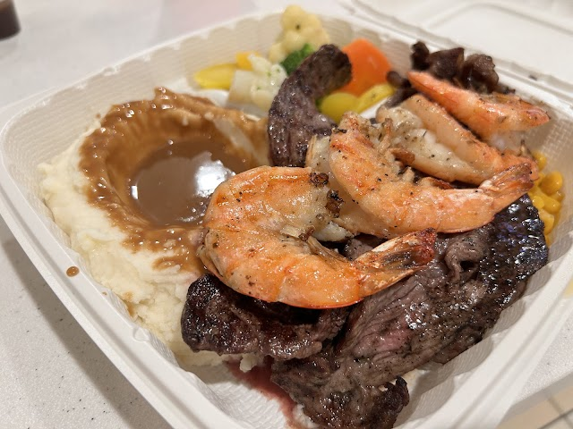
| 営業時間 | 月・火・水・木・金・土 10:30〜20:00 ／ 日 10:30〜19:00 |
|---|---|
| 定休日 | なし(要最終確認) |
| 住所 | 1450 Ala Moana Blvd #1160x, Honolulu, HI 96814 |
| 予約 | 不要 — ☎ (808) 941-1388 ／ 公式サイト |
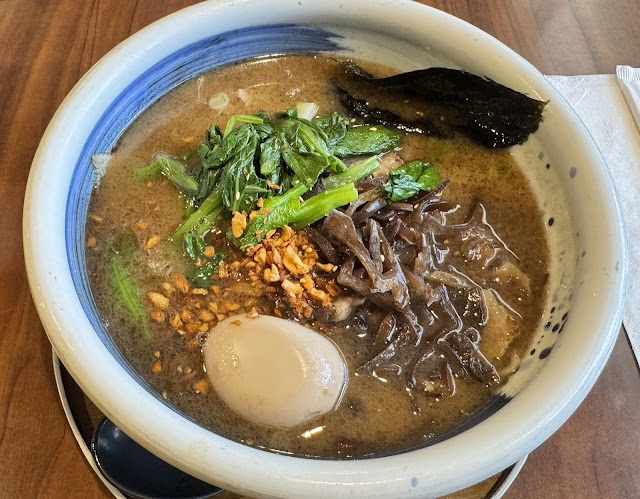
| 営業時間 | 月・火・水・木・日 11:30〜13:30, 17:00〜20:30 ／ 金・土 11:30〜13:30, 17:00〜21:00 |
|---|---|
| 定休日 | なし(要最終確認) |
| 住所 | 2080 S King St, Honolulu, HI 96826 |
| 予約 | 不要 — ☎ (808) 949-0670 ／ 公式サイト |
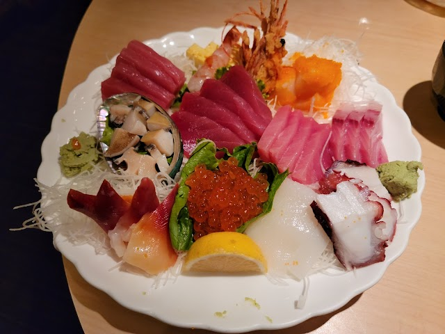
| 営業時間 | 月・火・水・木・金・土 11:00〜14:00, 17:30〜1:00 |
|---|---|
| 定休日 | 日曜 |
| 住所 | 762 Kapiolani Blvd, Honolulu, HI 96813 |
| 予約 | 可 — ☎ (808) 597-1525 ／ 公式サイト |
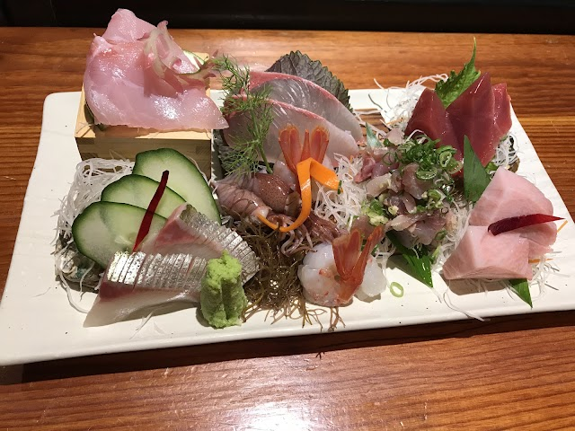
| 営業時間 | 月・火・水・木・金・土 17:00〜22:00 |
|---|---|
| 定休日 | 日曜 |
| 住所 | 1329 S King St, Honolulu, HI 96814 |
| 予約 | 推奨 — ☎ (808) 589-1329 ／ 公式サイト ／ 予約サイト |
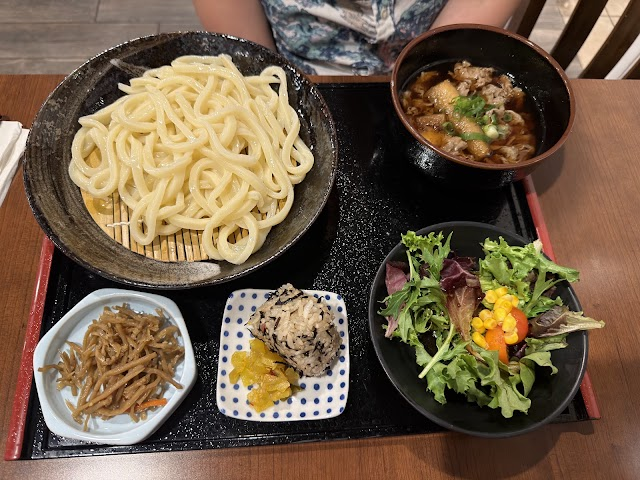
| 営業時間 | 月・水・木・日 11:00〜14:00, 17:00〜21:30 ／ 金・土 11:00〜14:00, 17:00〜22:00 |
|---|---|
| 定休日 | 火曜 |
| 住所 | 1111 McCully St Ste B-3, Honolulu, HI 96826 |
| 予約 | 不要 — ☎ (808) 949-5959 ／ 公式サイト |
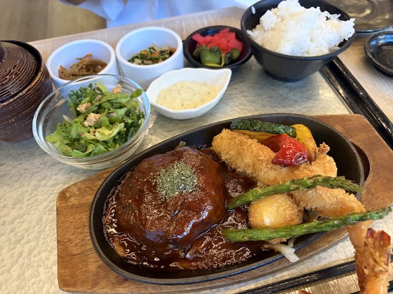
| 営業時間 | 月・火・水・木・日 11:00〜15:00, 17:00〜21:00 ／ 金・土 11:00〜15:00, 17:00〜22:00 |
|---|---|
| 定休日 | なし(要最終確認) |
| 住所 | 1001 Queen St #105, Honolulu, HI 96814 |
| 予約 | 推奨 — ☎ (808) 773-8235 ／ 公式サイト |
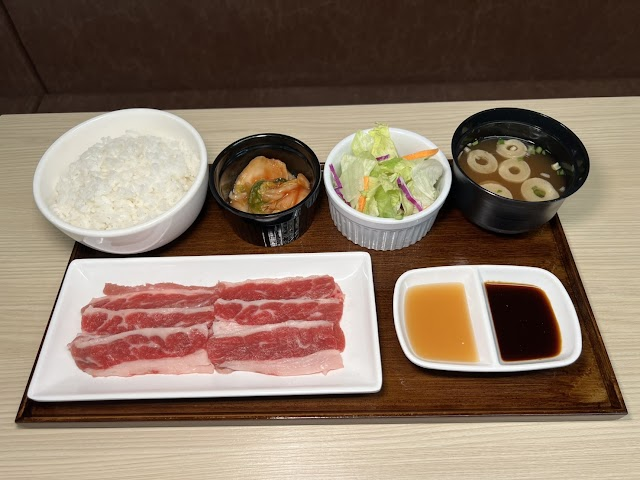
| 営業時間 | 月・火・水・木・金・土・日 11:00〜22:00 |
|---|---|
| 定休日 | なし(要最終確認) |
| 住所 | 1108 Ke’eaumoku St Unit 101, Honolulu, HI 96814 |
| 予約 | 不要 — ☎ (808) 597-9004 ／ 公式サイト |
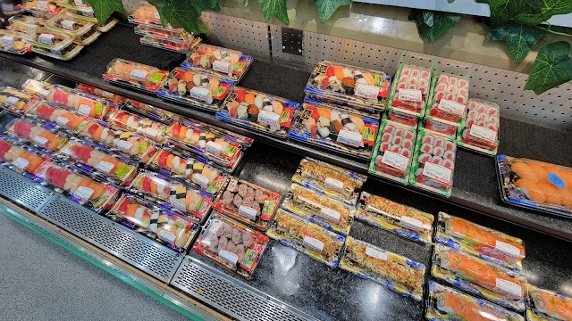
| 営業時間 | 月・火・水・木・金・土・日 24 :間営業 |
|---|---|
| 定休日 | なし(要最終確認) |
| 住所 | 801 Kaheka St #A7, Honolulu, HI 96814 |
| 予約 | 不要 — ☎ (808) 973-4800 ／ 公式サイト |
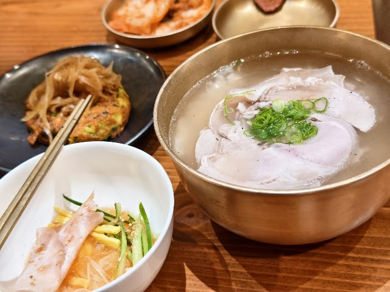
| 営業時間 | 月・火・水・木・金 7:00〜9:00, 11:00〜14:30, 17:00〜20:30 ／ 土・日 11:00〜14:30, 17:00〜20:30 |
|---|---|
| 定休日 | なし(要最終確認) |
| 住所 | 1388 Kapiolani Blvd #3, Honolulu, HI 96814 |
| 予約 | 不要 — ☎ (808) 861-3069 ／ 公式サイト |
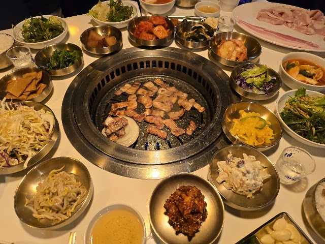
| 営業時間 | 月・火・水・木・金・土・日 10:30〜22:00 |
|---|---|
| 定休日 | なし(要最終確認) |
| 住所 | 1683 Kalākaua Ave, Honolulu, HI 96826 |
| 予約 | 可 — ☎ (808) 949-9909 |
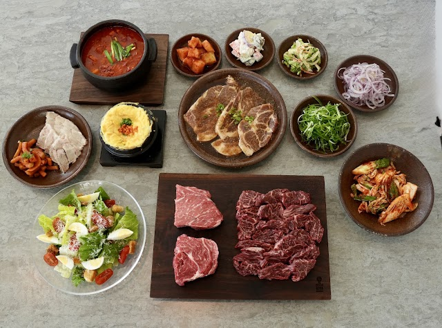
| 営業時間 | 月 0:00〜15:00, 16:30〜22:00 ／ 火・水・木・金・土 11:00〜15:00, 16:30〜22:00 ／ 日 11:00〜15:00, 16:30〜21:30 |
|---|---|
| 定休日 | なし(要最終確認) |
| 住所 | 1000 Auahi St Unit 220, Honolulu, HI 96814 |
| 予約 | 推奨 — ☎ (808) 312-3758 ／ 公式サイト |
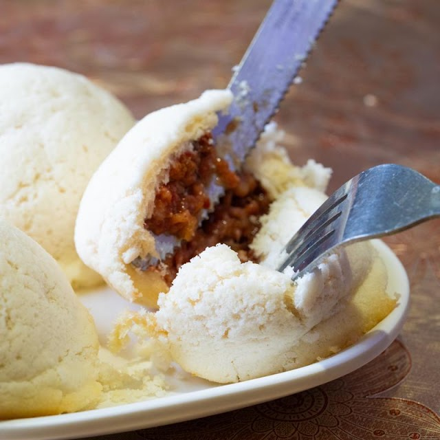
| 営業時間 | 月・火・水・木・金・土・日 10:30〜21:00 |
|---|---|
| 定休日 | なし(要最終確認) |
| 住所 | 1450 Ala Moana Blvd #4220, Honolulu, HI 96814 |
| 予約 | 可 — ☎ (808) 947-8818 ／ 公式サイト ／ 予約サイト |
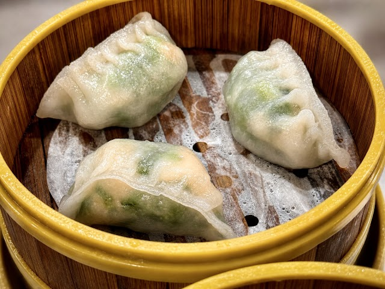
| 営業時間 | 月・火・水・木・金 9:00〜21:00 ／ 土・日 8:30〜21:00 |
|---|---|
| 定休日 | なし(要最終確認) |
| 住所 | 747 Amana St C102, Honolulu, HI 96814 |
| 予約 | 可 — ☎ (808) 946-8688 |
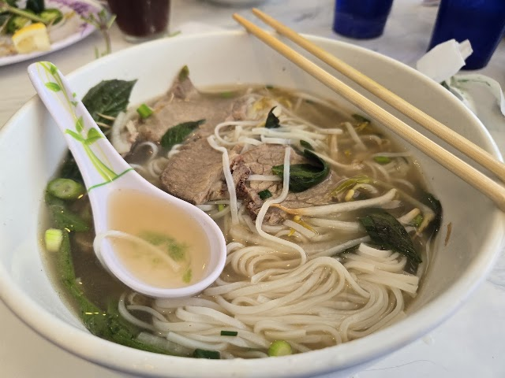
| 営業時間 | 月・火・水・木・金・土・日 9:30〜23:00 |
|---|---|
| 定休日 | なし(要最終確認) |
| 住所 | 1960 Kapiolani Blvd #204, Honolulu, HI 96826 |
| 予約 | 不要 — ☎ (808) 955-7770 ／ 公式サイト |
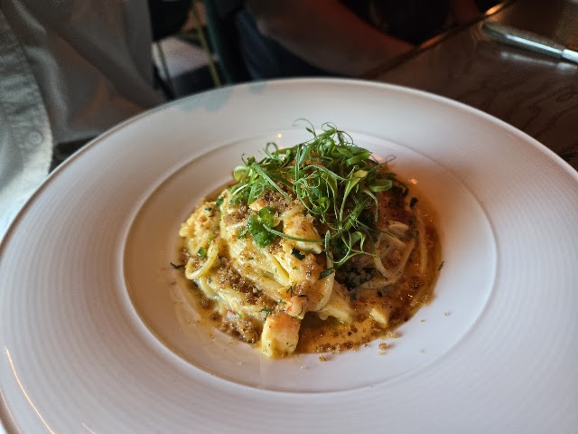
| 営業時間 | 月・火・水・木・日 17:00〜21:00 ／ 金・土 17:00〜22:00 |
|---|---|
| 定休日 | なし(要最終確認) |
| 住所 | 987 Queen St Apt 100, Honolulu, HI 96814 |
| 予約 | 推奨 — ☎ (808) 888-3008 ／ 公式サイト ／ 予約サイト |
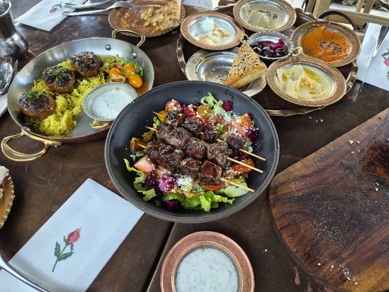
| 営業時間 | 月 17:00〜21:00 ／ 水・木・金・土・日 11:00〜14:30, 17:00〜21:00 |
|---|---|
| 定休日 | 火曜 |
| 住所 | 1108 Auahi St Ste 152, Honolulu, HI 96814 |
| 予約 | 推奨 — ☎ (808) 772-4440 ／ 公式サイト ／ 予約サイト |
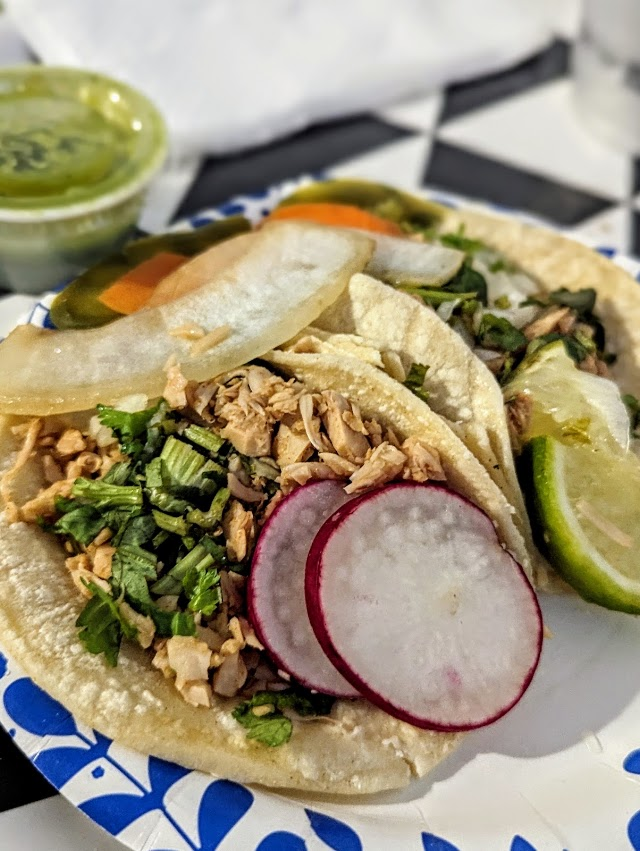
| 営業時間 | 月・火・水・木・金 11:00〜19:00 ／ 土 11:00〜17:00 |
|---|---|
| 定休日 | 日曜 |
| 住所 | 1034 Queen St #4116, Honolulu, HI 96814 |
| 予約 | 不可 — ☎ (808) 459-1664 ／ 公式サイト |
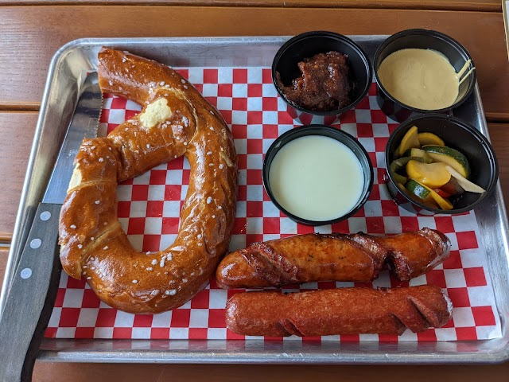
| 営業時間 | 月・火・水・木 11:00〜22:00 ／ 金 11:00〜23:00 ／ 土 10:00〜23:00 ／ 日 10:00〜22:00 |
|---|---|
| 定休日 | なし(要最終確認) |
| 住所 | 700 Queen St, Honolulu, HI 96813 |
| 予約 | 不要 — ☎ (808) 544-1605 ／ 公式サイト |
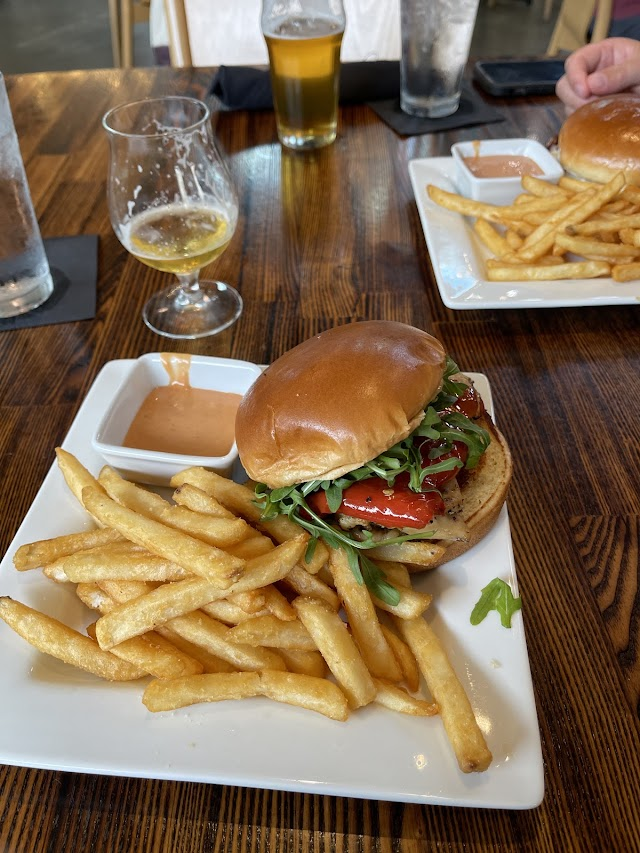
| 営業時間 | 火・水・木 12:00〜22:00 ／ 金・土 11:00〜23:00 ／ 日 10:00〜21:00 |
|---|---|
| 定休日 | 月曜 |
| 住所 | 962 Kawaiaha‘o St, Honolulu, HI 96814 |
| 予約 | 可 — ☎ (808) 591-2337 ／ 公式サイト ／ 予約サイト |
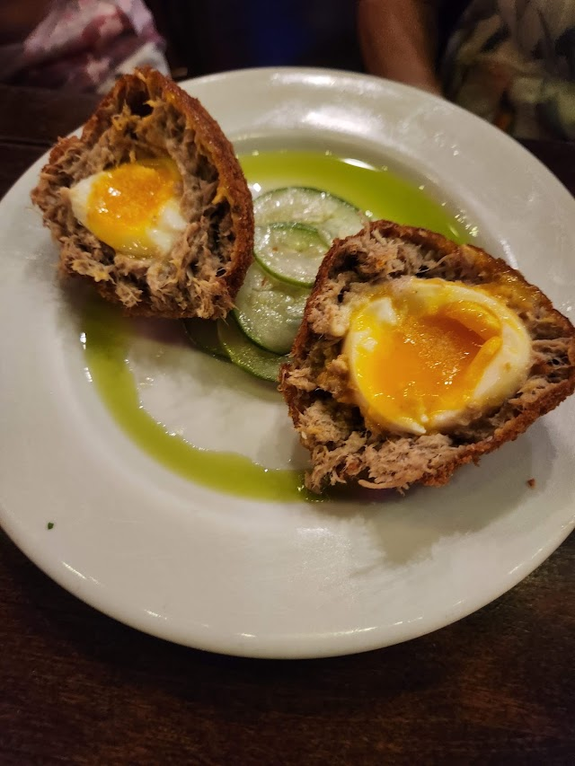
| 営業時間 | 月・火・水・木・日 16:30〜0:00 ／ 金・土 16:30〜2:00 |
|---|---|
| 定休日 | なし(要最終確認) |
| 住所 | 410 Atkinson Dr, Honolulu, HI 96814 |
| 予約 | 推奨 — ☎ (808) 744-9593 ／ 公式サイト ／ 予約サイト |
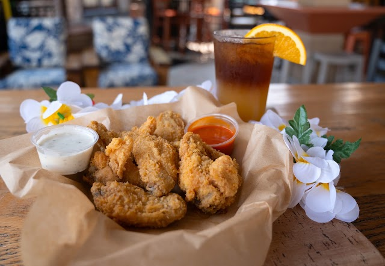
| 営業時間 | 月・火・水・木・金・土・日 11:00〜1:00 |
|---|---|
| 定休日 | なし(要最終確認) |
| 住所 | 1450 Ala Moana Blvd Ste 3247, Honolulu, HI 96814 |
| 予約 | 不要 — ☎ (808) 941-4400 ／ 公式サイト |
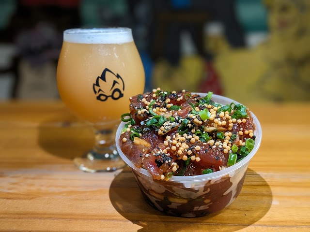
| 営業時間 | 月・火・水・木・金 14:00〜22:00 ／ 土 11:00〜22:00 ／ 日 11:00〜19:00 |
|---|---|
| 定休日 | なし(要最終確認) |
| 住所 | 1318 S Beretania St., Honolulu, HI 96814 |
| 予約 | 不要 — ☎ (808) 888-0500 ／ 公式サイト |
本ガイドは個人利用目的で作成。掲載情報は2026年9月時点の調査に基づく。写真出典: Google Maps投稿写真(©各投稿者/Google)。